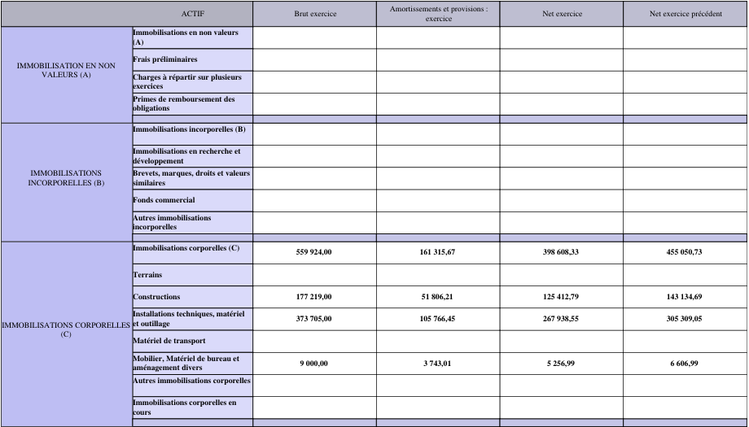

From PDF to
structured financial data.
Extract Moroccan balance sheets into structured data. Measure what GPT captures—and what still needs review.
Extraction latency · one PDF, one run
Valid structure. Measurable accuracy.
The output passed JSON and schema validation. Content correctness is evaluated separately against a reference.
Source: supplied extraction metrics. Schema: BilanGPT · OpenAI Responses API.
Selectable text. Complex tables.
A Moroccan balance sheet with assets, liabilities, detail rows, subtotals and grand totals. The text was selectable, but the table structure still had to be interpreted.
Keep the original PDF
After an image-based preprocessing attempt gave poor results, we used the PDF directly with the extraction prompt.
Project context supplied by the author. No image-versus-PDF benchmark score was provided.

The prompt, section by section.
Select a section to read its exact French instructions. Every part of the original prompt is included.
Only the Moroccan balance sheet
Extrais les tableaux du bilan marocain ACTIF et PASSIF.
Ignore les annexes et les autres états financiers.Exact excerpts from GPT_PROMPT · no implementation code · select each section to explore the full instruction set.
Preserve the value.
Preserve the unknown.
Normalize formatting without changing financial meaning.
Keep missing values explicit.
Keep absent or unreadable cells empty. Missing gross or depreciation columns stay empty, including for the prior year.
Keep the document’s meaning.
Liabilities use net fields unless other columns are printed. Preserve the original unit; do not convert or recalculate.
Unknown unit → “unknown”. Missing financial year → empty. Amounts are stored as decimal strings.
Schema validation checks structure—not whether the amounts are right.
Match the row.
Then compare the content.
Evaluate the saved extraction against the reference. No additional API call.
Clean the labels
Ignore case, accents, punctuation and repeated spaces.
Side + section + label
Pair exact duplicate keys in occurrence order.
Unique label, same side
Only among unmatched rows in both documents. Report section differences.
Amounts + structure
Check reference amount columns, section, row type, unit and years.
Read the score.
Know the denominator.
Row recall
78 matched reference rows / 91 reference rows.
13 reference rows are missing (14.29%).
Numeric accuracy by column
Correct numeric amounts / numeric reference cells
Net: 30/34 (N), 29/33 (N−1). Gross: 15/18. Depreciation: 5/6. Prior-year gross and depreciation: no numeric reference cells; no numeric score.
Source: Livrable/report.json · one extraction · zero absolute tolerance. Select a measure to see its definition.
Correct extraction.
Consistent accounting.
Two separate questions. A balanced statement can still contain extraction errors.
Promising on one document.
Not yet a benchmark.
The reference was transcribed by an assistant and still needs human review. Current scores describe one PDF and one extraction.
Next: review, then scale.
Review the gold reference, investigate the 13 missing and 2 extra rows, implement accounting checks on GPT outputs, then evaluate a representative annotated dataset.
Existing accounting assertions validate the reference. The GPT accounting validator is not implemented in the supplied brief.
Accounting consistency complements reference accuracy; it cannot establish it. Preserve missing amounts explicitly.